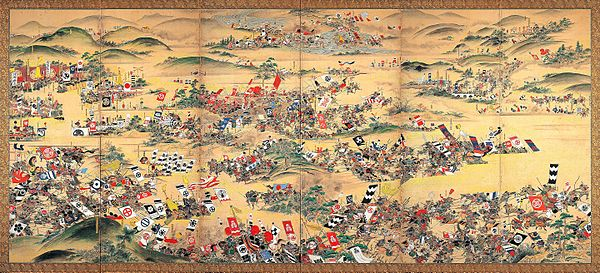

Sejarah

Tidak diketahui kapan manusia pertama kali menetap di kepulauan Jepang. Sudah lama diyakini bahwa tidak ada pendudukan Paleolitik di Jepang, namun sejak Perang Dunia II ribuan situs telah digali di seluruh negeri, menghasilkan berbagai macam peralatan Paleolitik. Ini termasuk perkakas inti, yang dibuat dengan cara memotong permukaan batu, dan perkakas serpihan, yang dibuat dengan menggunakan serpihan batu yang dipecah dari potongan batu yang lebih besar. Tidak diragukan lagi bahwa orang-orang yang menggunakan alat-alat ini pindah ke Jepang dari benua Asia. Pada satu tahap, jalur darat melalui jalur yang sekarang disebut selat Korea dan Tsushima memungkinkan terjadinya imigrasi dari semenanjung Korea, sementara jalur lainnya, melalui jalur yang sekarang disebut selat Sōya dan Tsugaru, memungkinkan orang untuk masuk dari Asia timur laut. berada.
Geografis
Jepang adalah negara kepulauan di Asia Timur. Kepulauan Jepang
terdiri dari pulau-pulau stratovolcano, empat pulau utama dari
utara ke selatan adalah Hokkaido, Honshu, Shikoku, dan Kyushu.
Jepang berada 36°sebelah utara khatulistiwa dan 138°sebelah timur
meridian utama. Jepang berada di utara timur laut Cina dan Taiwan
(dipisahkan oleh Laut Cina Timur), sebelah timur Korea (dipisahkan
oleh Laut Jepang), dan sebelah selatan Rusia Timur Jauh.
Selain 4 pulau utama, terdapat 3.000 pulau-pulau berukuran lebih
kecil, termasuk Okinawa serta pulau-pulau kecil yang berpenghuni
atau tidak berpenghuni. Pada tahun 2006, total luas wilayah Jepang
adalah 377.923,1 km², di antaranya 374.834 km² adalah daratan dan
3.091 km² perairan. Sekitar 73% wilayah Jepang adalah daerah
pegunungan. Total luas wilayah Jepang kira-kira 85% luas Pulau
Sumatra, namun lebih besar dari luas wilayah Jerman, Malaysia,
Selandia Baru, dan Britania Raya.
Wisata
Sebagai negara empat musim, wisata Jepang menawarkan berbagai wisata yang memesona dan tidak membosankan untuk dikunjungi. Berikut ini daftar tempat wisata di Jepang yang paling populer
Tokyo Tower
Tempat wisata di Jepang yang memiliki ketinggian 332.5 meter ini sangat indah dipandang kala malam menjelang dan lampu-lampu menerangi menara ini
Gunung Fuji
Mendaki gunung Fuji, pada ketinggian 1000 meter Anda bisa menemukan lima buah danau yang panoramanya tak kalah indah.